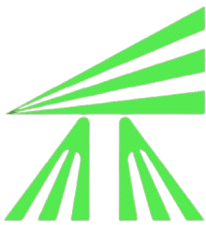

01Rekreativë & garues
10K
Liqeni
Për vrapues rekreativë dhe garues me përvojë, por e arritshme edhe për ata që e provojnë për herë të parë.
- Ora
- 11:00
- Çmimi
- 20 €

MitroRun
Të gjitha itineraret janë të rrafshëta dhe zhvillohen në hapësirën urbane. Zgjidh distancën që të përshtatet dhe vrapo me ritmin tënd.
Për vrapues rekreativë dhe garues me përvojë, por e arritshme edhe për ata që e provojnë për herë të parë.

Zgjedhja ideale për fillestarët dhe të gjithë ata që duan ta përjetojnë MitroRun pa presion.

E shkurtër, e sigurt dhe plot energji. Fëmijët vrapojnë në qytetin e tyre dhe e kalojnë vijën e finishit me krenari. Mosha e pjesëmarrjes 7 deri 14 vjeç.
Fondi i çmimeve ndahet mes tri vendeve të para në 10K dhe në 5K, veçmas për femra dhe për meshkuj.

Nga fëmijët në 2K deri te garuesit në 10K, e njëjta vijë nisjeje dhe i njëjti qytet.
Nisja dhe finishi te Sheshi Adem Jashari. Itineraret kalojnë përgjatë Ibrit dhe qendrës së qytetit.
Në qendër është vrapimi. Por MitroRun është një fundjavë që e nxjerr qytetin në lëvizje.
MitroRun synon të bëhet ngjarja kryesore sportive e Mitrovicës dhe një pikë takimi e përvitshme për vrapues, familje, të rinj, biznese dhe vizitorë nga Kosova e rajoni.
Garat zhvillohen në shtigje të rrafshëta nëpër qytet. Kjo i bën ato të përshtatshme si për ata që vrapojnë për herë të parë, ashtu edhe për vrapuesit që kërkojnë ritëm dhe rezultat personal.
Qyteti po ndryshon. Hapësira të reja, energjia e të rinjve, arti, muzika dhe bizneset lokale po krijojnë një fytyrë të re të Mitrovicës. Në të njëjtën kohë, historia dhe trashëgimia e saj mbeten pjesë e identitetit të qytetit.
Eja për garën dhe qëndro më gjatë. Ec nëpër qytet, zbulo kulturën lokale, tako njerëzit dhe shijo ushqimin.


Qyteti ku zhvillohet gara.


Vendet janë të kufizuara
Zgjidh distancën, plotëso të dhënat dhe përfundo pagesën. Fillo përgatitjet sot.
Regjistrohu tani →Merr njoftimet për regjistrimin, itineraret, programin dhe përgatitjet për garë.